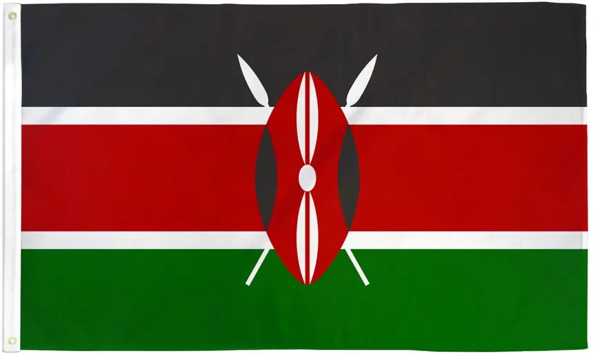
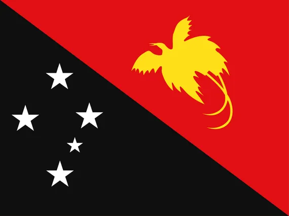

We're excited to announce our new coffee selection. Check out our menu below!
| Country | Region / estate | In the cup | |
|---|---|---|---|
| Nicaragua | Jinotega | Bakers chocolate, caramalised roasted nut, white peach, spiced cookie | |
| El Salvador | Monte Sion Estate | Roasted almond, stone fruit, chocolate, panela sugar | |
| Guatemala | South Santa Rosa / Chuk Mool | Chocolate, Cocoa, spices, red grapes, roasted nuts | |
| Guatemala | New Oriente | Nutty, chocolate, Cherries | |
| Guatemala | Huehuetenango / Todosanteria | Red grape, almond, toffee | |
| Mexico | Sierra Soconusco / Chiapas / Fedesi | Roasted nuts, prunes, burned caramel, cocoa, Biscuits | |
| Mexico | Chiapas | Prunes, biscuit, brown sugar and a long dry cocoa aftertaste with notes of lime pith | |
| Peru | San Martin de Pagoa | Poached red apples, burned caramel, scorched almonds, mulled wine | |
| Colombia | Antuoqia, Medellin (North) | Sweet tobacco, chocolate cake, soft spices, stone fruit, molasses, roasted almonds | |
| Colombia | Antuoqia, Medellin (North) | Sweet tobacco, chocolate, roasted almonds, burned caramel, starfruit | |
| Tanzania | Mebinga & Mbeya | Black current spices, wine, bittersweet choclate, roasted nuts, lemon zest | |
 |
Uganda | Zombo | Molasses, roasted nuts, ghana chocolate, spices, black tea undertones |
| Ethiopia | Ayirgacheffe-Gideb | Red fruits, vanilla spiced tea, caramel, vanilla wafer, dried fruits | |
| Ethiopia | Sidamo, Bensa district | Dark stone fruit, floral hint of coffee flavour, roasted nuts, caramel, plum, almonds, orange | |
| Ethiopia | Sidamo, Yirgacheffe | Citrus, jasmine, tea like complex flavours, roasted nuts, stone fruit, white flowers, lemonade | |
| Ethiopia | Guji-Oromia | Chocolate, berries, toasted nuts, red grapes, black tea, panela sugar | |
|  | Kenya | Aberdare Range, Kisii, Nyanza, Bungamo, Nakuru, Kericho | Blackberries, currants, roasted nuts, burned caramel, long cocoa aftertaste |
| Kenya | Kirinyaga county | Raspberry, yellow fruit, caramel, Louise slice, lemon and lime, long vanilla sponge cake aftertaste | |
| Kenya | Nyeri county | Citrus, jasmine, tea like complex flavours, roasted nuts, stone fruit, white flowers, lemonade | |
| Rwanda | Southern Huya | Brown spices, caramel roasted almonds, raisins, dark chocolate, deep earthy undertones | |
|  | Papua New Guinea | Jiwaka Province Waghi Valley | Spices, nuts, chocolate, apple skin |
| China | Yunan Province Simao - Pu-Er | Roasted nuts, sweet tobacco, sugar cane, dried fruits, burned caramel | |
| India | Chikmagalur, Karnataka | Earthy, rich, dark chocolate, cedar, spices, hint of tobacco, siruppy mouthfeel | |
| Indonesia | Aceh, Sumatra | Cherry, white grape, bergamot |